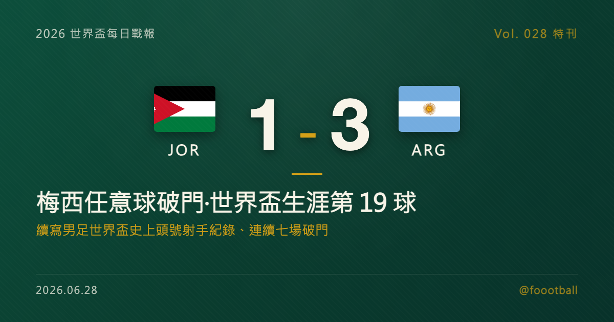

梅西的第七場與第十九球：史上最偉大的世界盃射手，與一場可能的告別
2026 世界盃 J 組末輪，替補登場的梅西為阿根廷攻入一記任意球，3-1 擊敗約旦、三戰全勝奪小組頭名。這顆是梅西世界盃生涯第 19 球，讓他把自己早已保持的男足世界盃歷史射手王紀錄繼續推高，並成為史上首位連續七場世界盃比賽都有進球的球員。這篇特刊講清楚：這兩項紀錄的份量、梅西的世界盃進球地圖、39 歲的告別命題，以及衛冕之路的下一關——對上維德角。

2026 世界盃特刊｜Vol. 028 番外
當梅西（Lionel Messi）從替補席站起來、走向罰球點前的那一刻，全世界都知道接下來可能會發生什麼——然後，他真的做到了。一記弧線精準的任意球，球應聲入網。這顆進球同時改寫了兩項世界盃紀錄，也讓一個關於「告別」的命題，悄悄浮上檯面。
一、那記任意球：連續七場的紀錄
2026 年 6 月，阿靈頓。阿根廷 J 組末輪面對首次參賽的約旦，衛冕冠軍早已提前鎖定晉級，主帥也讓梅西先坐在替補席上。下半場梅西替補登場，並在終場前以一記招牌任意球破門，將比分鎖定在 3-1。
這顆進球，讓梅西成為世界盃史上第一位「連續七場比賽都有進球」的球員。要把這個紀錄講清楚，必須先把分寸講對：它指的是連續七「場」世界盃比賽，而非連續七「屆」——這道紀錄橫跨 2022 年卡達世界盃與 2026 年這一屆，是梅西在球場上一場接一場累積出來的得分連續性。在世界盃這種四年一度、每屆只有寥寥數場的最高舞台上，能連續七場都留下進球，需要的不只是天賦，更是一種橫跨兩屆、近乎不可思議的穩定。
二、十九球：世界盃史上頭號射手的新高度
如果說「連續七場」是關於穩定，那麼另一項紀錄，則是關於絕對的高度。
這顆進球是梅西個人世界盃生涯的第 19 球，把他早已保持的男足世界盃歷史射手王紀錄繼續推高。克洛澤（Miroslav Klose）曾以 16 球長期占據榜首，但梅西在本屆稍早就已越過那道門檻；對約旦這球，是把領先繼續拉開。梅西的世界盃進球地圖，鋪了整整二十年：2006 年德國世界盃首次參賽就打進 1 球、2010 年南非顆粒無收、2014 年巴西攻入 4 球並率隊殺進決賽、2018 年俄羅斯 1 球、2022 年卡達在奪冠路上獨進 7 球，到 2026 年的這一屆，小組賽結束已累積 6 球。1、0、4、1、7、6——六屆世界盃、二十年時光，加起來剛好是改寫歷史的 19 球。
而這 19 球裡，份量最重的，無疑是 2022 年卡達的那 7 球。在那一屆，梅西從小組賽一路扛著阿根廷殺進決賽，最終在與法國那場被譽為史上最經典決賽之一的對決中捧起大力神盃——那座他追了一輩子、也是唯一缺過的獎盃。2022 年的封王，幾乎為「梅西是否史上最偉大」這道辯題畫上了句點；而 2026 年的這趟旅程，更像是一段沒有壓力、純粹享受的延長賽。當一個人已經把該證明的都證明完了，他在球場上留下的每一個瞬間，就只剩下純粹的足球與情懷。
值得一提的是，緊追在後的，是同樣狀態火熱的法國前鋒姆巴佩（Kylian Mbappé），目前以 16 球追平克洛澤的舊紀錄、暫居史上第二。一位是即將揮別舞台的傳奇、一位是當打之年的接班人，兩人在世界盃射手榜上的這場「交棒」，本身就是一個時代更迭的縮影——只是此刻，站在最高處的，仍然是梅西。
換個角度看，2026 年的這些紀錄，與其說是梅西在追逐什麼，不如說是足球這項運動在為他加冕。當「史上最偉大」的辯論早已隨 2022 年的封王塵埃落定，第 19 球、連續七場，這些數字更像是替一個已經圓滿的故事，補上幾枚閃亮的註腳。多年以後，當人們回望這個時代，記得的或許不只是他拿了多少冠軍、進了多少球，而是有那麼整整二十年，世界盃的最高處，幾乎總會出現一個叫梅西的名字。
三、39 歲的告別之舞？
讓這一切更具份量的，是梅西的年紀。
梅西生於 1987 年 6 月，這場對約旦之戰，距離他的 39 歲生日只過了三天。以這個年紀，還能在世界盃舞台上替補登場、用一記任意球決定比賽，本身就已是奇蹟。也正因如此，外界普遍預期：2026 年這一屆，很可能是梅西的最後一次世界盃之旅。
不過，這裡需要保留一份分寸：梅西本人並未正式宣布退役、也沒有把這屆定調為「最後一屆」。事實上，在 39 歲生日前後，他受訪時的態度仍相當開放，表示「只要身體還允許、還能幫上球隊，我就會繼續踢下去」。所以更準確的說法是——這「廣泛被認為」是他的告別之舞，但故事會不會在這裡畫上句點，主動權仍在梅西自己手上。正因為沒有人能百分之百確定，這屆世界盃的每一顆梅西進球，才更顯得值得珍惜。
值得玩味的是他登場的方式。如今已轉戰美國職業大聯盟（MLS）、效力國際邁阿密的梅西，在這屆世界盃對約旦一役是從替補席出發的——這在他過往的世界盃生涯裡幾乎難以想像。一方面，那說明阿根廷在小組賽已從容到能讓他輪休；另一方面，也誠實地映照出時間的痕跡：即便是梅西，39 歲的身體也需要被謹慎管理。但耐人尋味的恰恰在於，當他真的踏上球場、站到罰球點前，那記任意球的弧線、那份從容，與二十年前那個橫空出世的少年，並沒有什麼不同。歲月改變了他的出場順序，卻沒有改變他左腳的答案。
四、衛冕之路：阿根廷與維德角的下一關
紀錄之外，梅西真正在追的，是另一件事：帶領阿根廷衛冕。
作為 2022 年的世界盃冠軍，阿根廷在這屆的小組賽走得相當穩健：3-0 阿爾及利亞、2-0 奧地利、3-1 約旦，三戰全勝、僅失一球，以 J 組頭名晉級。對約旦一役，主帥能讓梅西替補輪休，本身就說明了球隊在小組賽的從容。
淘汰賽首輪，等著阿根廷的，是本屆最大的童話主角之一——首次參賽就闖進 32 強的維德角（Cape Verde）。兩隊將於 7 月 3 日在邁阿密交手。紙面上，這是衛冕冠軍對上世界排名第 67 位黑馬的懸殊對決；但維德角整個小組賽證明的，恰恰是「紙面」未必說了算（詳見本站維德角特刊）。對梅西與阿根廷而言，這是一場必須贏、也被看好會贏的比賽——但在淘汰賽的單場決勝裡，沒有任何一場可以掉以輕心。
而即便闖過維德角這一關，阿根廷的衛冕之路也注定不會輕鬆。「衛冕」本就是世界盃最艱難的任務之一——上一支能成功蟬聯世界盃冠軍的球隊，要追溯到 1962 年的巴西；過去六十多年，沒有任何一個國家能在世界盃完成連霸。本屆賽會更擴軍至 48 隊、淘汰賽要連過五關才能登頂，路途比以往任何一屆都長。對 39 歲的梅西與這支阿根廷而言，要在這條更長的路上一場一場走到最後，需要的不只是巨星的靈光，更是整支球隊的續航、健康與一點運氣。這也是為什麼，每多走一輪，這趟可能的告別之旅就更顯珍貴。
無論這屆世界盃最終會怎麼結束，梅西都已經把自己的名字，刻上了世界盃史上最高的那一格。第七場、第十九球——當一位 39 歲的球員還能在最高舞台上不斷改寫紀錄，我們能做的，或許就是好好看完他還願意為我們踢的每一場球。
常見問題
Q：梅西「連續七場世界盃進球」是連續七屆嗎？ A：不是。是連續七「場」世界盃比賽都有進球，橫跨 2022 與 2026 兩屆，並非連續七「屆」。梅西生涯共踢過 6 屆世界盃（2006、2010、2014、2018、2022、2026），其中 2010 那屆並未進球。他是史上第一位達成連續七場世界盃比賽進球的球員。
Q：梅西現在是世界盃史上頭號射手了嗎？ A：是的。對約旦這球讓他把世界盃生涯進球數推高到 19 球，繼續高居男足世界盃史上第一。克洛澤的 16 球曾是舊紀錄；梅西已在本屆稍早超越，這一球則是擴大領先。法國的姆巴佩目前以 16 球追平克洛澤舊紀錄、暫居第二。
Q：2026 是梅西最後一屆世界盃嗎？ A：廣泛被認為是，但梅西本人尚未證實。他在 39 歲生日前後受訪時表示，只要身體允許、還能貢獻，就會繼續踢。因此較準確的說法是「很可能是他最後一屆」，而非已成定局。阿根廷淘汰賽首輪將於 7 月 3 日在邁阿密對上維德角。
Tags: 世界盃, 2026世界盃, 梅西, 阿根廷, 克洛澤, 維德角